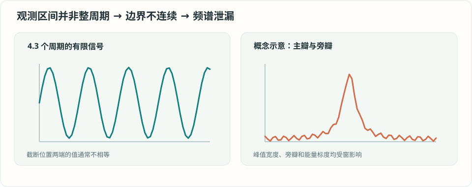
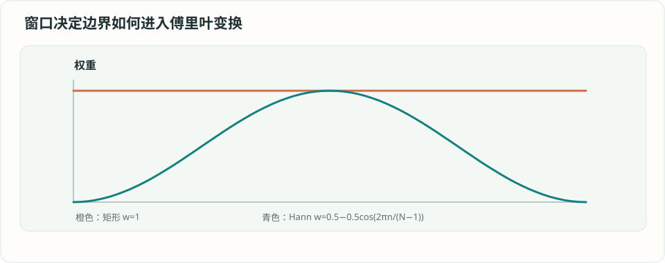

CHAPTER 07 / 28 · STATISTICAL MODELLING
频谱分析：从周期信号到可解释的功率谱
傅里叶变换回答“波动发生在什么频率”。推导 DFT 和周期图，准确理解单位、Nyquist、谱泄漏、窗口与分辨率的取舍。
某个传感器每 12 期振荡一次，另一个振荡每 6 期发生一次。如果两种波动叠加，时域里看到的只是一条复杂曲线；频域则尝试回答：变化主要集中在哪些频率上？
频谱并不是把所有时间序列问题自动变成周期检测：采样频率、观测时长、去趋势处理、窗口以及随机噪声都影响谱峰的解释。尤其要区分“发现重复规律”和“保证未来能准确预测”。
01 · 先定义频率单位，再谈周期
对于等间隔观测，频率 f 可以用每个观测间隔中有多少个周期表示：若每 12 期重复一次，则 f=1/12≈0.0833 周期/期；每 6 期重复一次，则为 1/6≈0.1667 周期/期。若按小时采样、采样率为 fs=1/小时，频率的物理单位就变成每小时周期数。
Nyquist 频率为 f_N=fs/2。对均匀采样，超过 Nyquist 的频率会发生混叠；不能单凭采样后的低频峰确定原始信号是不是更高频的别名。提高零填充 nfft 只会插值频率网格，不会提高真实物理分辨率。
02 · DFT 的复数相位与振幅并不神秘
离散傅里叶变换（DFT）把 N 个等间隔样本与一组复指数基函数做内积。实部和虚部共同描述该频率的幅度与相位；对实值输入，负频率与正频率之间存在共轭对称性，所以单边功率谱通常只画非负频率。
一个纯粹频率恰好落在 DFT 网格上的正弦波，理想情况下会把能量集中在对应的频率位置上；若频率介于网格点之间，谱值会扩散到多个位置，即出现谱泄漏现象。
03 · 周期图不是“万能概率分布”
周期图（periodogram）通常以有限样本 DFT 的平方幅度构造功率估计。常见 Python 接口提供两种标度：scaling="density" 输出功率谱密度（单位通常为变量平方/Hz），scaling="spectrum" 输出各频点的平方振幅型谱量。不要把两种模式的纵轴混成同一物理量。
周期图会受有限样本变化很大，单次周期图通常不是一致的谱密度估计。Welch 方法通过分段、加窗和平均来降低方差，但可能降低频率分辨率。对于突发、明显非平稳过程，整段静态功率谱还可能掩盖随时间变化的频率结构。
04 · 为什么观察不是整数个周期会泄漏
有限记录相当于用一个时间窗截断无限信号。时域的相乘会变为频域的卷积；矩形窗的频率响应有旁瓣，使一个正弦波在多个频率上出现能量。非整数周期记录时，这种扩散更易观察。


加 Hann 窗并非总优：它可以改善旁瓣泄漏，却降低区分很接近频率的能力。窗口的相干增益和等效噪声带宽（ENBW）还影响振幅校正与噪声底的比较，因此不要无条件将不同窗口下的峰值高度直接相比。
05 · 分辨率由观测总时长决定
N 个均匀间隔样本、采样率 fs，DFT 自然频率网格间隔为 Δf=fs/N。若记录总时长约为 T=N/fs，频率分辨尺度约为 1/T。记录长度越长，越有能力把相近的稳定频率区分开。
| 操作 | 对频率图的主要作用 | 不应误解 |
|---|---|---|
| 增加采样率且记录长度不变 | 扩展 Nyquist 频率 | 不一定改善低频分辨 |
| 增加记录总时长 | 缩小自然频率网格间隔 | 稳态假设可能更难成立 |
| 零填充 nfft | 让离散谱曲线更平滑 | 不会凭空增加观测信息 |
| Hann 加窗 | 降低远处旁瓣 | 不等于消除全部泄漏 |
| Welch 平均 | 降低谱估计方差 | 分段会缩短单段的有效观测长度 |
06 · 改变周期，观察频率如何移动
在右侧真实分析图绘出峰值之前，先用合成正弦学习 f=1/P。交互区每次生成相同长度的理论波形，只改变周期 P；周期越短，单位采样间隔发生的振荡次数越多。
交互图为明确假设下的理论或合成演示，不表示对任何真实数据的参数估计。
注意：交互修改的是数据生成机制，不是从未知实际数据中检测周期。真实序列可混合多个波段、趋势和非周期成分。
07 · 用 SciPy 对照矩形窗与 Hann 窗
下面代码模拟频率为 0.073 周期/期的正弦波，故意让其频率不落在 128 点 DFT 网格上，然后比较两种窗的结果。fs=1.0 意味着频率单位为周期/采样期。
import numpy as np
from scipy.signal import periodogram
n = 128
fs = 1.0
f0 = 0.073 # 非 DFT 整数频率网格
x = np.sin(2*np.pi*f0*np.arange(n))
f_rect, p_rect = periodogram(x, fs=fs, window="boxcar",
detrend=False, scaling="spectrum")
f_hann, p_hann = periodogram(x, fs=fs, window="hann",
detrend=False, scaling="spectrum")
print("rect peak:", f_rect[np.argmax(p_rect)])
print("hann peak:", f_hann[np.argmax(p_hann)])
assert np.allclose(f_rect, f_hann)
assert abs(f_rect[np.argmax(p_rect)] - f0) <= fs/n不要把最高谱峰误差与真实频率的差别视为 SciPy 计算错误：其频率格点只有 fs/n 间隔。谱泄漏、窗口主瓣与噪声决定有限样本中峰的位置稳定性。
08 · 频谱结果能回答什么，不能回答什么
频谱擅长诊断重复节律、设计滤波思路以及检查残差的频域结构，但单靠谱峰并不等于发现原因，不能直接推断季节性的因果来源。若数据包含时变频率、明显结构断点或不规则采样，直接整体 FFT 可能失效；可以考虑时频方法或适用于不规则采样的频谱估计。
三项检查：先核对频率单位，再标明预处理与窗口选择，最后把谱峰转回实际时间周期并用留出数据确认它是否稳定。
定义与实现的核对来源
这些资料用于核对数学条件、参数含义及接口。图示与实验为独立编写的教学材料，不代表外部论文或真实业务效果。